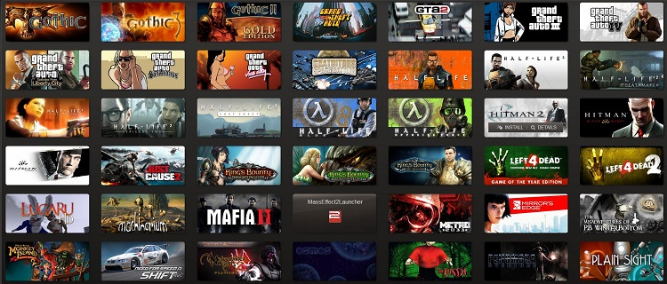

-
Topul celor mai bine vândute jocuri de pe Steam
Cifrele de vânzări ale jocurilor publicate prin intermediul Steam reprezintă un subiect despre care cei de la Valve refuză să comenteze. Şi totuşi, aflăm periodic cum jocurile de PC înregistrează vânzări din ce în ce mai slabe atunci când vine vorba de comercializarea acestora în sistemul tradiţional retail (adică cutie cu disc vândută în magazin), grosul profitului realizându-se în regim digital, prin download-uri directe.
Evident, în aceste condiţii, vânzările înregistrate prin Steam devin extrem de importante, mai ales că vorbim de cel mai popular sistem de distribuţie digitală pentru jocuri. Ei bine, Sergey Galyonkin de la SteamSpy a reuşit să dezvolte un algoritm prin intermediul căruia ne putem face o idee destul de clară asupra celor mai bine vândute titluri comercializate prin intermediul Steam.

De ce doar atât? Pentru că rutinele puse la punct de acesta iau în calcul şi download-urile gratuite efectuate în perioade în care anumite jocuri sunt oferite gratuit (cum ar fi free weekend-urile pentru unele titluri). De aici şi apariţia în top a unor jocuri de la care, sincer, nu aveam aşteptări atât de mari. Însă, conform declaraţiilor oferite de unii producători, cifrele obţinute prin algoritmul SteamSpy sunt foarte aproape de “adevăr”, deci pot fi folosite pentru a crea o imagine de ansamblu a vânzărilor de pe Steam.
Acestea fiind spuse, iată care sunt cele mai bine vândute 100 de jocuri de pe Steam, alături de numărul de exemplare în care acestea s-au comercializat:
1. Men of War: Assault Squad 2 - 18.887.301
2. Counter-Strike: Source - 13.687.323
3. Half-Life 2: Lost Coast - 13.483.312
4. Unturned - 13.140.974
5. Counter-Strike: Global Offensive - 12.134.826
6. Left 4 Dead 2 - 11.970.999
7. Half-Life 2: Deathmatch - 11.426.195
8. Counter-Strike - 11.168.089
9. Half-Life 2 - 8.776.362
10. Counter-Strike: Condition Zero Deleted Scenes - 8.8670.493
11. Garry's Mod - 8.566.169
12. The Elder Scrolls V: Skyrim - 8.281.789
13. Portal - 8.198.330
14. Sid Meier's Civilization V - 7.302.688
15. Day of Defeat - 7.165.135
16. Deathmatch Classic - 7.077.811
17. Ricochet - 7.050.764
18. Portal 2 - 6.349.088
19. Warframe - 6.101.801
20. Talisman: Digital Edition - 6.087.119
21. Robocraft - 5.922.518
22. Day of Defeat: Source - 5.856.833
23. Terraria - 5.729.326
24. Half-Life 2: Episode One - 4.877.732
25. Half-Life - 5.198.432
26. Heroes & Generals - 5.046.196
27. Half-Life 2: Episode Two - 4.877.732
28. Killing Floor - 4.858.412
29. Borderlands 2 - 4.846.821
30. Team Fortress Classic - 4.819.774
31. Half-Life: Opposing Force - 4.785.772
32. Half-Life: Blue Shift - 4.773.408
33. PAYDAY 2 - 4.679.676
34. War Thunder - 4.646.673
35. Metro 2033 - 4.587.170
36. Call of Duty: Modern Warfare 2 - 4.420.251
37. Dead Island: Epidemic - 4.299.699
38. PAYDAY: The Heist - 3.796.625
39. Loadout - 3.718.575
40. Left 4 Dead - 3.606.523
41. PlanetSide 2 - 3.571.748
42. Half-Life Deathmatch: Source - 3.538.519
43. No More Room in Hell - 3.502.199
44. Grand Theft Auto IV - 3.501.426
45. Arma 2: Operation Arrowhead - 3.455.833
46. Saints Row: The Third - 3.451.969
47. Sniper Elite V2 - 3.392.466
48. Just Cause 2 - 3.370.055
49. BioShock Infinite - 3.322.916
50. Fallout: New Vegas - 3.290.460
51. Call of Duty: Black Ops - 3.232.502
52. Call of Duty: Black Ops Multiplayer - 3.232.502
53. DayZ - 3.143.633
54. Magicka - 3.137.451
55. Tomb Raider - 3.081.039
56. Call of Duty: Modern Warfare 3 - 3.027.718
57. Empire: Total War - 2.989.079
58. Counter-Strike Nexon: Zombies - 2.968.987
59. Path of Exile - 2.952.759
60. Torchlight 2 - 2.764.975
61. The Witcher 2: Assassins of Kings Enhanced Edition - 2.697.744
62. Rising Storm/Red Orchestra 2 Multiplayer - 2.669.152
63. BioShock - 2.656.015
64. Warface - 2.642.877
65. Chivalry: Medieval Warfare - 2.639.786
66. XCOM: Enemy Unknown - 2.632.059
67. Tom Clancy's Ghost Recon Phantoms - 2.598.830
68. The Binding of Isaac - 2.533.144
69. Don't Starve - 2.433.456
70. Neverwinter - 2.426.502
71. Half-Life: Source - 2.423.410
72. Far Cry 3 - 2.416.456
73. Rust - 2.397.909
74. Company of Heroes - 2.390.181
75. Nosgoth - 2.363.907
76. Total War: SHOGUN 2 - 2.356.952
77. Batman: Arkham City GOTY - 2.353.088
78. Mirror's Edge - 2.342.269
79. Grand Theft Auto: Episodes from Liberty City - 2.333.769
80. Tropico 5 - 2.331.451
81. Borderlands - 2.268.856
82. Call of Duty: Black Ops 2 - 2.268.083
83. Saints Row IV - 2.248.764
84. BioShock 2 - 2.222.490
85. APB Reloaded - 2.218.626
86. FTL: Faster Than Light - 2.208.580
87. Total War: ROME 2 Emperor Edition - 2.207.807
88. Hitman: Absolution - 2.192.352
89. Age of Empires 2: HD Edition
90. theHunter - 2.131.303
91. Warhammer 40.000: Dawn of War 2 - 2.129.757
92. Saints Row 2 - 2.104.256
93. Trine 2 - 2.104.256
94. Castle Crashers - 2.072.572
95. Batman: Arkham Asylum GOTY Edition - 2.056.344
96. Firefall - 2.047.844
97. Grand Theft Auto: San Andreas - 2.046.298
98. Darksiders - 1.982.931
99. Dead Space - 1.979.067
100. Defiance - 1.978.294